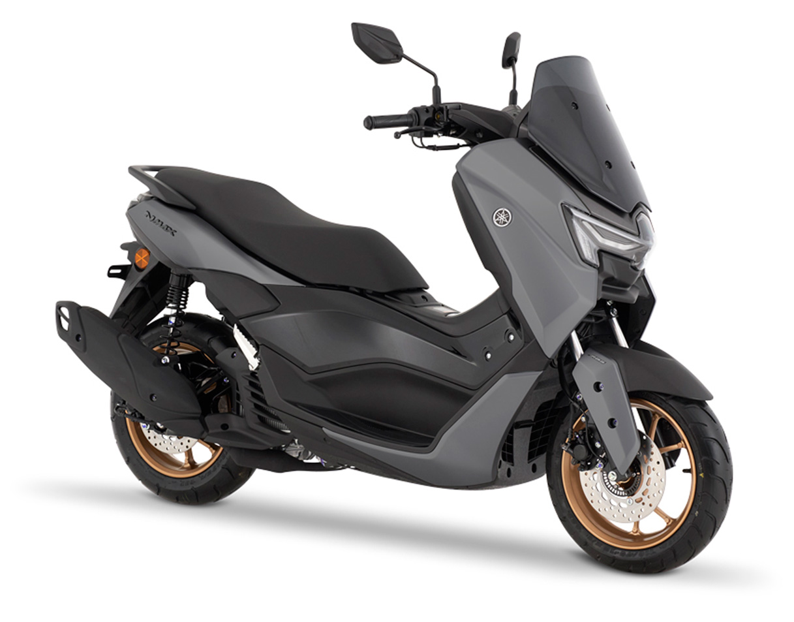

Harold Marín, asesor comercial en Caucasia
Por encargo, 0 kilómetros y sin hacer la fila del concesionario. Se la entregamos en Caucasia.
Precio de la moto. SOAT, matrícula e impuestos los paga el comprador.

La NMAX es la scooter más buscada del país y en muchos almacenes hay lista de espera. Por encargo usted paga más, pero no espera meses para tenerla.
Precio de lista tomado de la página de Incolmotos Yamaha el 22 de septiembre de 2026. Puede cambiar sin previo aviso.
Fotos de referencia de Yamaha. La moto que usted recibe es negra.
Evita que las dos ruedas se bloqueen al frenar de golpe, también en piso mojado.
Si la llanta de atrás patina en barro o pavimento mojado, la moto regula la potencia sola.
Con la llave en el bolsillo enciende la moto, abre el sillín y la tapa de la gasolina.
Apaga el motor en los semáforos y lo prende al acelerar. Gasta menos gasolina.
Se calienta hasta 30% menos que un sillín común. Se nota con el sol del Bajo Cauca.
Cabe el casco bajo el sillín, carga el celular andando y ve llamadas y mensajes en el tablero.
| Motor | 155 cc, 1 cilindro, 4 tiempos, 4 válvulas, refrigeración líquida, VVA |
|---|---|
| Potencia | 15,15 HP a 8.000 rpm |
| Torque | 14,2 Nm a 6.500 rpm |
| Transmisión | Automática CVT |
| Alimentación | Inyección electrónica |
| Tanque | 7,1 litros |
| Peso con tanque lleno | 131 kg |
| Altura del sillín | 770 mm |
| Frenos | Disco adelante y atrás, con ABS |
| Llantas | 110/70-13 adelante, 130/70-13 atrás, sin cámara |
| Luces | LED, con direccionales integradas |
Ponga sus números. La cuenta compara lo que paga en carreras con lo que gastaría en gasolina andando en su propia NMAX.
El precio del galón viene con la referencia oficial de Montería desde abril de 2026. Cámbielo por el de su bomba. El rendimiento es aproximado y depende de cómo maneje.
El comprador saca los papeles a su nombre. Así queda la cuenta.
SOAT: tarifa oficial 2026 fijada por la Superintendencia Financiera, incluye contribución ADRES y tasa RUNT.
Llene esto y le llega a Harold por WhatsApp. Le respondemos con la fecha de entrega y cómo separarla.
Sí. Es una NMAX 155 modelo 2027, color negro, 0 kilómetros. Se consigue por encargo y se entrega sin matricular para que quede a su nombre desde el principio.
El precio de Yamaha es el de lista, pero la entrega depende de la disponibilidad de cada almacén y hay esperas largas. Por encargo usted paga la diferencia a cambio de tenerla pronto.
La entrega es en pocos días. Al separar la moto le confirmamos la fecha por escrito.
El comprador. El SOAT 2026 para motos de 100 a 200 cc cuesta $343.300. La matrícula y el impuesto dependen del tránsito donde la registre. Le explicamos el trámite paso a paso.
Tiene la garantía de fábrica de Yamaha, con las condiciones de su manual de garantías. Antes de pagar le entregamos por escrito dónde y cómo se hace valer.
Puede verla en 3D en la página oficial de Yamaha. Si quiere conocer una en persona, escríbanos y le decimos dónde verla.
Escríbanos por WhatsApp. Acordamos las condiciones de separación y le enviamos todo por escrito antes de que usted pague.